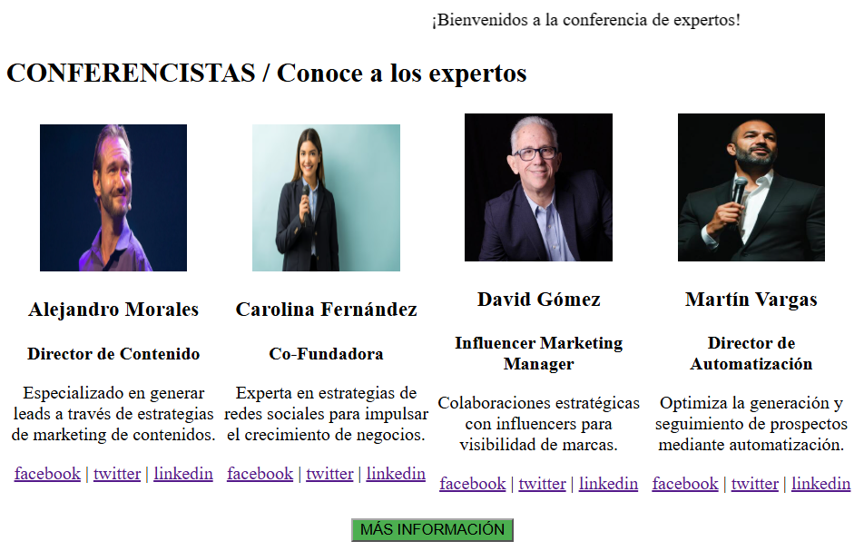

Desarrolladora Frontend
RIWI Enero 2025 - Presente
Diseño e implementación de interfaces web maquetadas con HTML y CSS responsive. Colaboración en el mantenimiento de proyectos web y versionamiento continuo de código mediante Git y GitHub.
Desarrolladora Web en Formación
Soy una desarrolladora de software con una sólida base analítica y una gran pasión por construir soluciones web eficientes, estructuradas y visualmente atractivas. Me especializo en el desarrollo frontend utilizando HTML y CSS, manteniendo siempre buenas prácticas de código limpio, semántica y control de versiones con Git y GitHub. Me motiva profundamente comprender la lógica detrás del código y optimizar la experiencia de usuario, integrando mi capacidad de análisis con el aprendizaje constante de nuevas tecnologías como JavaScript y arquitectura backend. Mi enfoque profesional se centra en la disciplina, el trabajo colaborativo y la resolución creativa de problemas para transformar ideas complejas en productos digitales funcionales y de alto impacto.
RIWI Enero 2025 - Presente
Diseño e implementación de interfaces web maquetadas con HTML y CSS responsive. Colaboración en el mantenimiento de proyectos web y versionamiento continuo de código mediante Git y GitHub.

Desarrollo de un sitio web personal para presentar perfil profesional, habilidades y rutas de aprendizaje. En este proyecto practiqué la estructuración jerárquica con tablas, listas ordenadas y formularios semánticos en HTML.
Ver en vivo
Creación de una interfaz web para la presentación de perfiles de expositores y expertos en eventos. Se puso en práctica el uso de tablas divididas en 4 columnas para organizar contenido dinámico y elementos multimedia básicos como marquesinas.
Ver en vivo